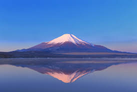

Mount Fuji, Japan
Location: Honshu, Japan
Mount Fuji, Japan's tallest peak at 3,776 meters, is an active stratovolcano that last erupted in 1707, and geologists consider it likely to erupt again eventually, though there's no way to predict exactly when. It's been considered sacred for centuries in both Shinto and Buddhist traditions, and pilgrims have climbed it as a spiritual practice since at least the 7th century. Its famously symmetrical cone shape has made it one of the most depicted natural landmarks in art history, most famously in Hokusai's woodblock prints.
Type: Volcano / Mountain Landscape